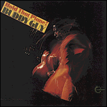
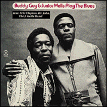
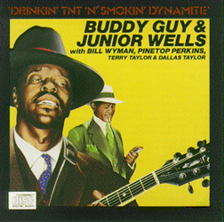
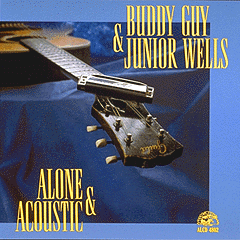
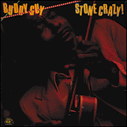
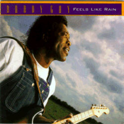
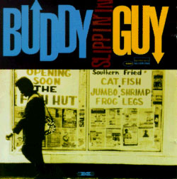
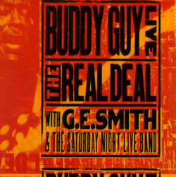

“В удачный вечер Бадди Гай - не просто самый потрясающий блюзовый артист, какого можно найти: он - самый потрясающий блюзовый артист, какого вообще только можно вообразить.”
Сказанное умным критиком Ч.Ш.Мюрреем справедливо и по отношению к записям Б.Гая.
“Стоит отметить, что для многих “здешних” любителей блюза имя это вообще-то не входит в число любимейших и дражаших. Тому имеется изрядная причина. О концертах Бадди Гая с восторгом отзывались многие тонкие ценители “там”. Но до недавнего времени - из всех 40 лет его профессиональной карьеры (за исключением последней грэммиевой пятилетки), Бадди Гай никак не мог в студии достичь той же естественности игры, как и на сцене. По его собственным словам, он чувствовал себя скованно, что приводило к следующей ошибке - в студии он полностью подчинялся распоряжениям продюссора, считая, что тому - виднее. Мы же здесь судим о блюзмэнах - в основном по записям, и не мудрено, что до 90х имя Бадди Гая вообще редко всплывало в разговорах московских любителей блюза. Впрочем, так было не только в Москве. Студийные неудачи привели к тому, что на протяжении всех 80х годов у Бадди Гая вообще не вышел ни один новый альбом! И за пределами Чикаго имя его оказалось полностью забыто всеми, кроме историков блюза, да и те считали его то ли отошедшим от дел, а может и вовсе - в мир иной.”
Из передач “Всего этого блюза”, посвященных 60-летию Бадди Гая.
The VERY BEST OF BUDDY GUY (Rhino)
САМОЕ ЛУЧШЕЕ ОТ БАДДИ ГАЯ
Дает вполне развернутое представление о карьере БГ, даже включает пару трэков, записанных Гаем в Луизиане до переезда в Чикаго. Подобраны почти все лучшие его достижения, но маловразумительный материал конца 80х (записанный незадолго до Damn Right...) портит общее положительное впечатление. При том учтите, что большинство лучших записей Гая длиииииииииииииииннные, так что, впихивая их в формат Greatest Hits, Rhino вынуждены были некоторые - подрезать.
STONE CRAZY (Chess)
ПСИХ НЕНОРМАЛЬНЫЙ
Весьма достойная подборка из чессовскогго периода 1960-1967гг. Если вы не страдаете переизбытком $, предпочтительней она, чем дотошная The Complete Chess Studio Recordings (MCA/Chess), где самоцветы смешаны с мусором. Записано в период, когда Гай метался между професcией водителя-дальнобойщика и студийного гитариста фирмы Chess. И представляет баддигаевский подход к так называемому West End Blues’у при соблюдении всех необходимых компонентов стиля: крепкие корни из Дельты, вибрирующий-на-котурнах госпеллом-заряженный вокал и пост-бибикинговское отношение к гитаре, с акцентом на тех грубых тонах, которые, восходя к совершенству, сам Король из своего арсенала теперь удалил напрочь. Обожатели SRV найдут здесь песни BG, которые SRV слушал в детстве и подбирал на гитаре, чтобы сыграть на школьных танцульках, а в годы расцвета записал их кавер-версии: Leave My Girl Alone и Let Me Love You. Альбом велик хронометражом, и включает как подлинные шедевры: First Time I Met The Blues (сочинения чикагского ветерана, пианиста Little Brother Montgomery, а не самого Бадди Гая, как ошибочно указывают “итальянцы”, чьим альбомом под этим названием, “Manufactured in ЕЕС” можно обойтись, если уж очень туго с деньгами, потеряв при этом в качестве звука и надежности информации),”Stone Crazy”, “Ten Years Ago” (перечисление продолжить по вкусу) - так и мишуру пустопорожнюю.

A MAN AND THE BLUES - ЧЕЛОВЕК И БЛЮЗАбсолютно обязательны для прослушивания изучающему чикагский блюз, как знак очередной смены блюз-поколений! В конце 60х молодая (тогда) фирма Vanguard объединила лучшие молодые (тогда) блюзовые силы, готовые двигать блюз в 70е. Бадди Гай играет более взвешанно, что иногда снижает энергетику по сравнению с истошными чессовскими записями, зато гарантирует более высокий общий уровень: здесь нет откровенных проколов. Медляки Гая выполнены в темпе Largo, полны томительной истомой, в которой, как в глухой ночи, пылает факел страстного вокала. На пламенный soul указывает и наличие You Give Me Fever из репертуара Godfather of soul - James’a Brown’a. (Кстати. Несчастная славная песенка, первым исполнителем коей был учитель Брауна - Little Willie John, привлекла на свою голову внимание московской поп-тусни и была изуродована-как-бог-черепеху без тени огня, души, таланта, голоса или хотя бы фантазии - всего того, что и отличает талантливого человека от прошмандовки из тусовки.) Последний из вышеназванных альбомов - MY TIME AFTER AWHILE - сборник вангардовских записей в период от 1966 по 1972г., подготовленный для издания в формате CD. Дополнительно он включает в себя и несколько треков из альбомов Junior’a Wells’a, записанных с гитарой Гая, что делает сию компиляцию более чем достойным приобретением, но обидное отсутствие великолепного медленного заглавного трека второго альбома (на котором за фортепиано Otis Spann) не позволяет назвать My Time After Awhile 100%-ной лазерной заменой всем трем виниловым альбомам Гая на Vanguard. Но 90% - это как пить дать.

BUDDY GUY & JUNIOR WELLS “PLAY THE BLUES” (Rhino/Atco)
BUDDY GUY & JUNIOR WELLS “DRINKIN’ T’N’T ‘N’ SMOKIN’ DYNAMITE” (Red Lighting, Blind Pig Records)Историю создания и состав участников первого многострадального прочтете в статье, второй альбом записан на джаз-фестивале в Монтре (Montreux Jazz Festival) в Швейцарии. На большинстве треков солирует Junior Wells. Не путайте второй с “Live At Montreux”, записанным, разумеется, там же, но в 1977г. и изданным на Black & Blue. 9 минут на первом концертнике занимает “Ten Years Ago” - и это светлые минуты в жизни любителя блюза. Но в целом - на этих альбомах можно и сэкономить, чтобы купить

BUDDY GUY & JUNIOR WELLS "ALONE & ACOUSTIC (Isabel или Alligator)Акустический оазис в электроблюзгдетодажероковом наследии Бадди Гая. Американский alligatorовский вариант включает в себя на пять треков больше, чем европейское первоиздание Isobel. Начав с собственных блюзов, Гай и Уэллс (и солируя по очереди, и дуэтом) перешли к классике. Гай спел даже ту песенку J.L.Hooker'a, которую когда-то разучивал на завалинке, изгнанный из дома братьями-сестрами. Альбом несет такое ясное ощущение интимности, что, кажется, записан был непременно при свечах. Хотя энергичных блюзов в нем не меньше, чем эллегических.

The BLUES GIANT (Isobel), он же STONE CRAZY (Alligator)В 1981г., когда Alligator опубликовал в США эту
европейскую запись Бадди Гая, никто и подумать не
мог, что когда-нибудь вновь будет переиздан тот
первый сборник, у которого и позаимствовано
название STONE CRAZY. То, что казалось вполне логичным
в 1981г., ныне создает известную путаницу в
дискографии. О содержании могу только повторить -
весьма рекомендовано почитателям SRV для того,
чтобы понять, почему же он так высоко ценил
дружбу с BG. Альбом поразительно сродни молодому
рьяному воэновскому блюзу. Слушать только
ГРОМКО!
DAMN RIGHT I GOT THE BLUES (Silvertone)
ДА, ЧЕРТ ВОЗЬМИ, ЭТО ТАК, У МЕНЯ ЕСТЬ БЛЮЗ
Halleluyah!!! Grammy!! HOT 10! Прорыв к славе не как следствие компромиса с законами коммерции, а как нежданный плод верности главному делу своей жизни (плюс применение добрыми коммерсантами законов рекламы и торговли к бескомпромисному блюзу, право на который Бадди Гаем утверждено десятилетиями бескорыстного служения музыке). Традиционное блюзовое содержание при великолепно свежей музыкальной подаче, по духу соответствующей 90м годам, - это органичнейшее сочетание традиций и современности составляет самое ценное качество всех альбомов Бадди Гая 90х годов. Тайтл первому из них дал мощный размеренный блюз, специально сочиненный Бадди Гаем к первому заходу в студию после 12-летнего перерыва; в нем он горько признает: “Мне не выиграть никак, просто потому что мне на кон поставить нечего”. Но зато он стоит на своем, не отрекаясь от блюза ни за какие коврижки. Трек звучит с тем огромным запасом энергии, который не выплеснуть в один короткий миг, которого хватит вперед еще на десятилетия и десятилетия блюзовой судьбы. Второй густой блюз - сочинение американского умного песенника John’a Hiatt’a, чьими творениями пользуются те представители приблюзованного или прикантрованного поп-рока, которых вполне можно считать людьми достойными и честностарающимисякакмогут. “Where Is The Next One Comming From - Откуда грянет следующий” (подразумевается “подарок судьбы”) содержит мелодию далекую от блюзовых канонов, но Гай добавляет soulовые дудки и подпевки, так что трек ложится в блюзовый альбом вполне. Тем более, что уж по содержанию 100% блюз: “У меня была работа, но меня сократили. У меня было сердце, но оно стало слишком мягким. У меня была подруга, но она мне врала. У меня была жена - но она умерла. И мне уже все равно, откуда грянет следующий. И сам прошу - давай, давай, пошли мне еще”- отлично ложится на размеренную блюзовую походку. Бряцает здесь неразличимые аккордики весьма тогда популярный Mark Knopfler. А дальше начинаются знойные кайфы: блюз чикагского пианиста Eddie Boyd’a “Five Long Years”: “Пять долгих лет пахал ради этой бабы на металлургическом заводе, все денежки до цента приносил домой, и у нее хватило наглости прогнать меня прочь. Если с вами когда-то обходились не по-справедливости, вы поймете, что я чувствую” Неожиданно вкусно серябряными молоточками на фортепиано играет некто Pete Wingfield (о котором ничего не знаю, а теперь хотел бы). Но когда врываются густые басовитые спокойные фразы баддигаевского Фендера (сам-то он поет не без истерики) - только тогда и понимаешь, как же та баба глупа, что такого солидного человека проморгала. На хитовой MUSTANG SALLY сира Мака Райса солирует гитара Jeff’a BECK’a, британского ритмэндблюзового ветерана, друга BG еще с первого его посещения Англии в 60х. Eric Clapton и Jeff Beck играют на еще одном soulовом номере Early In The Morning. А дальше до конца альбома - только блюз, и только высокооктановый. Баддигаевский “Too Broke To Spend The Night - Нечем даже за ночь заплатить” - искрит злостью на финансовые обстоятельства. Классический “Black Night” Jessie Robinson’a (блюзовая “Темная ночь”) - вот this is really COOOOL! Архи-медленных 7’42” под рояль и электроорган вводят слушателя в сомнамбулическо-левитационное состояние! Когда работа над альбомом уже началась, пришло известие о гибели SRV. Для Бадди Гая это была личная горькая утрата. И два последних трека - посвящение памяти друга. (На оборотной стороне компакта - фотография, где за спиной печально склонившего голову Бадди Гая - не в вокусе - фотография гитариста в широкополой шляпе и цветастой рубашке. Пусть посторонние не знают, свои - поймут и разделят эту скорбь.) Гай сыграл тот блюз Диксона, который SRV разучивал в детстве по его, Бадди Гая, пластинке,- Let Me Love You Baby - но теперь уже он перенимал у Стиви его манеру исполнения. Закольцовывается в бесконечную ленту взаимообратная связь блюзовых поколений и школ: чикагской 60х и техасской 80х.
Финальный инструментальный трек “Remembering Stevie/Вспоминая Стиви” - это именно душа музыки Стиви и его блюзовые постулаты, но в преломлении восприятия Бадди Гая.

FEELS LIKE RAIN (Silvertone)Опять Grammy.
Набирая темп на первых двух номерах, Гай исполняет два истошных блюза в ключе своих первых записей вроде Stone Crazy, но с поправкой на утяжеленное интенсивное звучание новой эпохи: She Is A Superstar собственого сочинения и I’ll Go Crazy (Я с ума сойду) Джеймса Брауна, бывшего в этом стиле для него эталоном. Спокойная заглавная песня - дуэт с Bonnie Raitt, с мелодичной ее слайд-гитарой, скорее ближе к кантри-звучанию. Автор ее - опять же Джон Хиитт (см.выше). She Is Nineteen Years Old (Ей девятнадцать лет) сочинения Мадди Уотерса и по аранжировке является явным поклоном памяти отца чикагского блюза. Some Kind Of Wonderful (Какая-то чудесная) - моторный дуэт с британским ветераном Paul’ом Rodgers’ом, прославившимся в 60-х в группе Free, а в 1993г. выпустившим примечательный “Tribute To Muddy Waters”, где Бадди Гай сыграл соло-гитару на заглавном треке. Последний, появляющийся по ходу альбома гость - John Mayall. Он поет и играет на ф-но на блюзе I Could Cry (Я едва не расплакался) сочинения давнего, но, оказывается, отнюдь незабытого друга Бадди Гая - Junior’a Wells’a. У Мэйэлла с Бадди Гаем есть одна общая черта в биографии - оба они изучали блюз заочно, по пластинкам и радиопередачам, поскольку в той округе, где они росли, один в Манчестере, другой в Луизиане, просто поблизости не было ни одного реального блюзмэна, кто мог бы показать приемы игры, так что их первые открытия, что как играется - исключительно их личное достижение... Может быть, и наложившее характерное клеймо яркой индивидуальности стиля. Альбом Бадди Гай завершил новосочиненным своим блюзом, но на самую классическую тему и вполне в духе delay technic Мадди Уотерса: Country Man (Деревенский).

SLIPPIN’ IN (Silvertone)Наконец-то альбом без гостей, значит хозяин может позволить себе и расслабиться. А это качество для блюза положительное. И альбом вышел более цельным, чем предыдущий. Наконец-то рядом с Гаем пианист Johnny Johnson. ”Я забываю, что у меня в руках электрическая гитара, когда слышу, как Джонсон играет на акустическом рояле.- говорил Гай.- Это уносит меня в далекие времена, когда я слышал Эдди Бойда. Переворачивает во мне все и вытаскивает на поверхность самый глубокий блюз.” Блюз на Slippin’ In глубок, един по стилю и разнообразен в оттенках. Программа состоит из новых и старых песен Бадди Гая и вечнозеленой блюзовой классики, вроде Shame Shame Jimmy Reed’a, Love Her With A Feeling L.Fulson'a, или блистяще исполненного блюза 7-11 F.Robinson'a, погодка Бадди Гая. На нескольких песнях Гай играет вместе с осиротевшей группой "Double Trouble". Поскольку они вместе играли еще в остинских клубах за десятилетия до прорыва к славе, Reese Wynans, Tommy Shannon и Chris Layton никак не воспринимаются гостями. И опять Grammy.

LIVE! The REAL DEAL (Silvertone)Собственно, куда мне указывать американским
звукоакадемикам, но, что касается блюза, не им мне
указывать. Так что - вот этому альбому Grammy точно
принадлежал бы по праву. Но не дали. Бадди играет
с великолепным оркестриком, руководимым
замечательным (и при том белым) гитаристом
G.E.Smith'ом. За клавишными: Johnny Johnson(акустика) и Leon
Pendarvis (электрика). Гай играет песни, которые в его
репертуаре уже по лет 20-30. Успех явно пошел ему на
пользу. Он легко импровизирует, из голоса напрочь
исчезли повизгивания, блюз обрел спокойствие и
уверенность. Наверное, с точки зрения юности,
ищущей приключения, это не самый привлекательный
альбом Бадди Гай. Но рано или поздно, укатавшись
на крутых горках, любитель блюза обретет в этом
альбоме - свою АРКАДИЮ.
Любителям редкостей:
Британская фирма Charly, до того, как обанкротилась, судясь с MCA по поводу прав на Chessовские записи, издала два по своему любопытных сборника - The TREASURE UNTOLD и I CRY AND SING THE BLUES. Это то, что не вошло в chessoвский Stone Crazy, но повтряет содержание The Complete Chess. Как акомпаниатор, Гай записывался на Chess очень много, но отдельного разговора заслуживает только его работа с королевой чикагского блюза Koko Taylor, где Гай действительно в амплуа лидер-гитариста: KOKO TAYLOR - The CHESS YEARS. AMERICAN FOLK BLUES FESTIVAL'65, изданный германскими энтузиастами на L&R/Bellaphone представляет молодого Бадди Гая и в качестве солиста, и аккомпаниатором при старейшинах чикагского блюза, включая John'a Lee Hooker'a, причем как собственно на гитаре, так и на бас-гитаре. Остинские (техасские) записи BG ищите на альбомах фирмы Antone's: TENTH ANNIVERSARY Vol.1 и Vol.2. На упоминаемых в статье 24 NIGHTS Eric'a Clapton'a гитару Бадди слышно плохо. Зато в альбоме с музыкой к фильму RUSH (это где впервые прозвучали Tears In Heaven) BG c группой EC развернул на десять сладких минуточек медляк I Don't Know Wich Way To Go. Что касается кино, на крохотном лейбле Red Lightening издан саундтрэк документалки CHICAGO BLUES, где много Гая и в дуэте с Джуниором Уэллсом и в джемах с Мадди Уотерсом. Охотники за малотиражками могут заняться LIVE AT THE CHEAKERBOARD, опубликованным впервые только в 1997г. чикагским концертом Бадди Гая 1979г.